So läuft ein Tag am Stand: Interessenten erfassen, Probefahrten aufrufen, Fahrzeuge im Blick behalten. Am Stand ist kein Internet nötig.
| Gerät | Browser | Weg | Hinweis |
|---|---|---|---|
| iPhone / iPad | Safari | Teilen-Symbol (Quadrat mit Pfeil nach oben), „Zum Home-Bildschirm“, „Hinzufügen“ | Eigener Speicher: erst installieren, dann den Code in der installierten App eingeben. |
| iPhone / iPad | Chrome | Teilen-Symbol oben in der Adressleiste, „Zum Home-Bildschirm hinzufügen“, „Hinzufügen“ | Ab iOS 16.4. Eigener Speicher: erst installieren, dann den Code in der installierten App eingeben. |
| iPhone / iPad | Firefox | Menü (drei Punkte), „Teilen“, „Zum Home-Bildschirm“, „Hinzufügen“ | Ab iOS 16.4. Eigener Speicher: erst installieren, dann den Code in der installierten App eingeben. |
| Android | Chrome | Knopf „Installieren“ in der App (wenn angeboten) oder Menü (drei Punkte), „App installieren“ (ältere Versionen: „Zum Startbildschirm hinzufügen“), „Installieren“ | Den Code können Sie vor oder nach der Installation eingeben. |
| Android | Firefox | Menü (drei Punkte), „Installieren“ (ältere Versionen: „Zum Startbildschirm hinzufügen“), „Hinzufügen“ | Die Frage „Daten dauerhaft speichern“ mit „Erlauben“ beantworten. |
| Android | Samsung Internet | Menü (drei Striche), „Seite hinzufügen zu“, „Startbildschirm“ (oder „Installieren“, wenn angeboten) | Den Code können Sie vor oder nach der Installation eingeben. |
| Windows | Chrome | Symbol „App installieren“ rechts in der Adressleiste oder Menü (drei Punkte), „Speichern und teilen“, „Seite als App installieren“, „Installieren“ | Den Code können Sie vor oder nach der Installation eingeben. |
| Windows | Edge | Symbol „App installieren“ in der Adressleiste oder Menü (drei Punkte), „Apps“, „Diese Website als App installieren“, „Installieren“ | Den Code können Sie vor oder nach der Installation eingeben. |
| Windows | Firefox | Keine Installation möglich | Als Lesezeichen behalten; die Seite läuft im Tab auch ohne Internet. Für ein App-Fenster Chrome oder Edge nutzen. |
| Mac | Safari | Menü „Ablage“, „Zum Dock hinzufügen“, „Hinzufügen“ | Ab macOS 14. Eigener Speicher: Code erst in der Dock-App eingeben. |
| Mac | Chrome | Symbol „App installieren“ rechts in der Adressleiste oder Menü (drei Punkte), „Speichern und teilen“, „Seite als App installieren“, „Installieren“ | Den Code können Sie vor oder nach der Installation eingeben. |
| Mac | Edge | Symbol „App installieren“ in der Adressleiste oder Menü (drei Punkte), „Apps“, „Diese Website als App installieren“, „Installieren“ | Den Code können Sie vor oder nach der Installation eingeben. |
| Mac | Firefox | Keine Installation möglich | Als Lesezeichen behalten; die Seite läuft im Tab auch ohne Internet. Für ein App-Fenster Chrome oder Edge nutzen. |
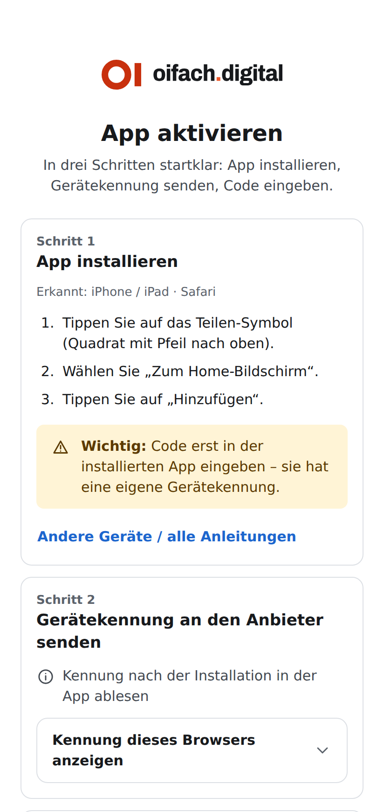
ABCD-EFGH. Tippen Sie auf „Kopieren“ und schicken Sie die Kennung an den Anbieter. Dafür bekommen Sie den Aktivierungscode (sechs Zeichen, XXX-XXX). Geben Sie ihn ein, dann „Aktivieren“. Der Code gilt nur für dieses Gerät: Jedes Gerät braucht seinen eigenen, auch mit Laptop-Programm. Das ist einmal je Gerät nötig, danach läuft die App ohne Internet. Wer die Browserdaten löscht oder die App unter einer anderen Adresse öffnet, bekommt eine neue Kennung und braucht einen neuen Code. Unter „Einstellungen“, Karte „Lizenz“, steht, bis wann die Lizenz gilt, und noch einmal die Gerätekennung.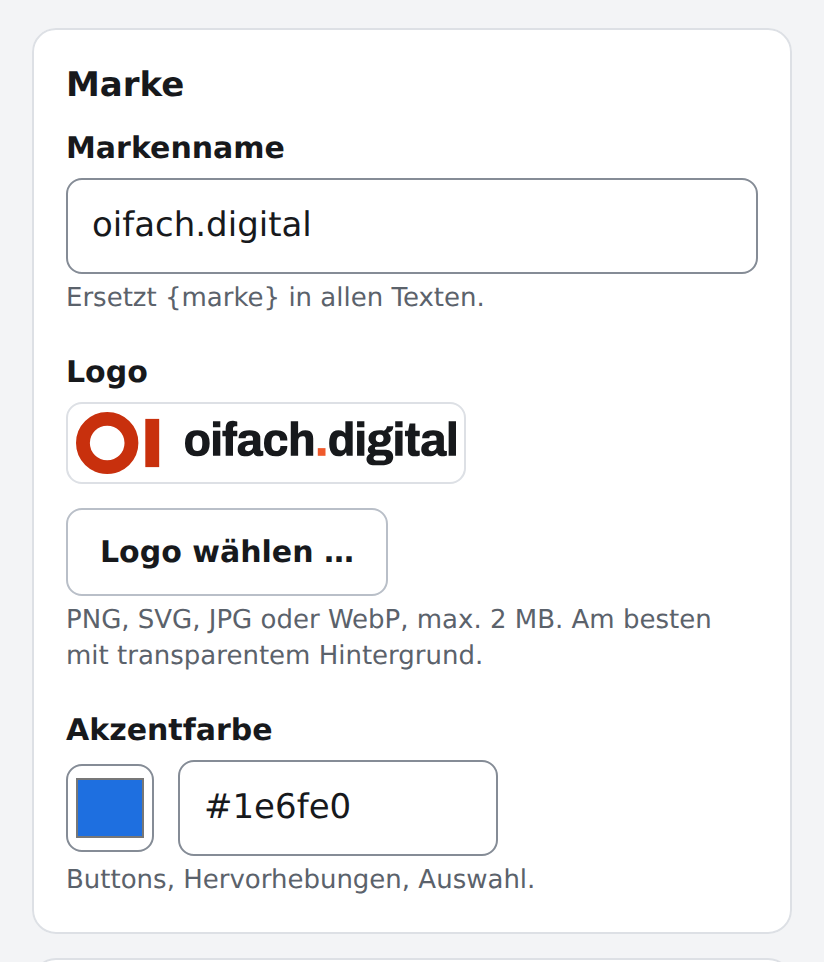
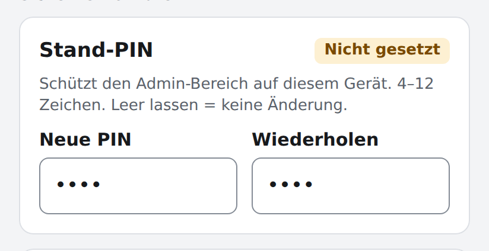
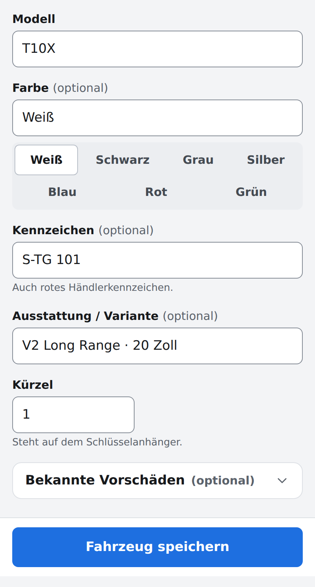
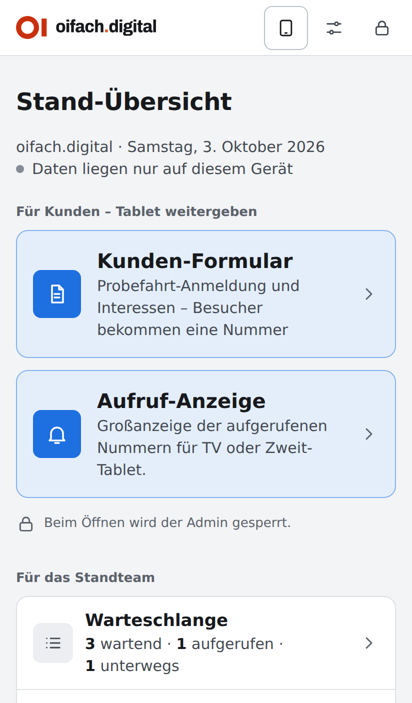
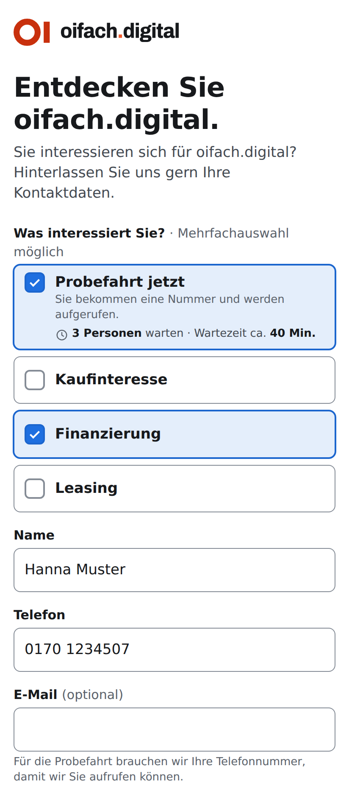
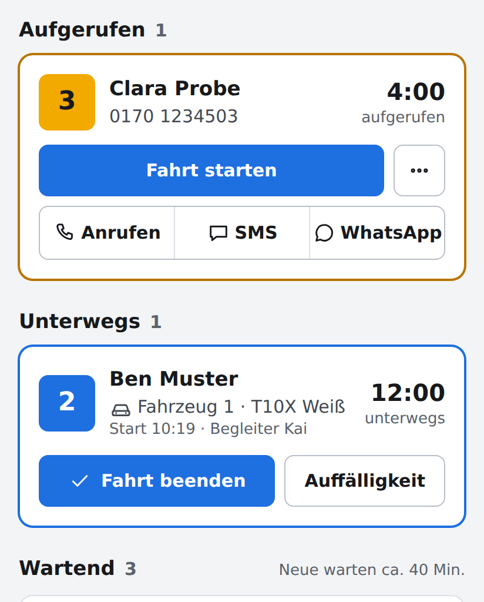
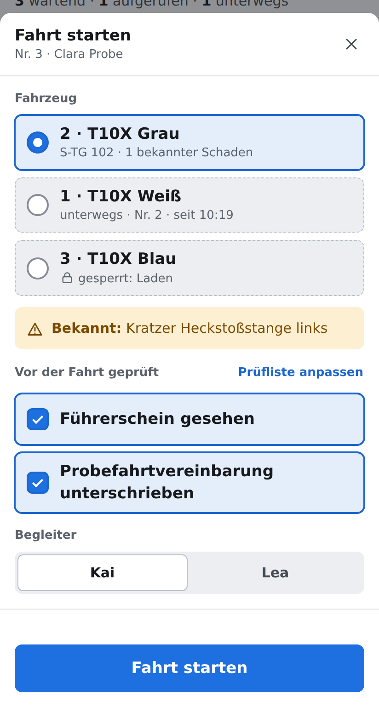
Ohne Laptop-Programm hat jedes Gerät seine eigenen Daten. Mit dem Programm auf dem Laptop zeigen alle Geräte dieselben Listen.
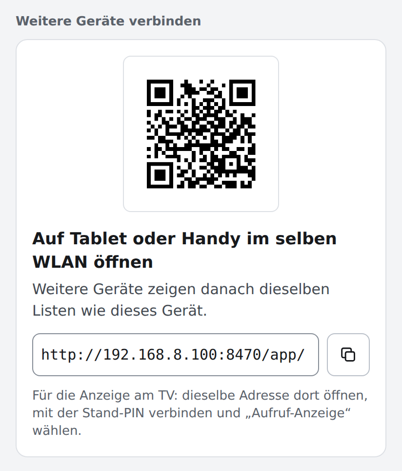
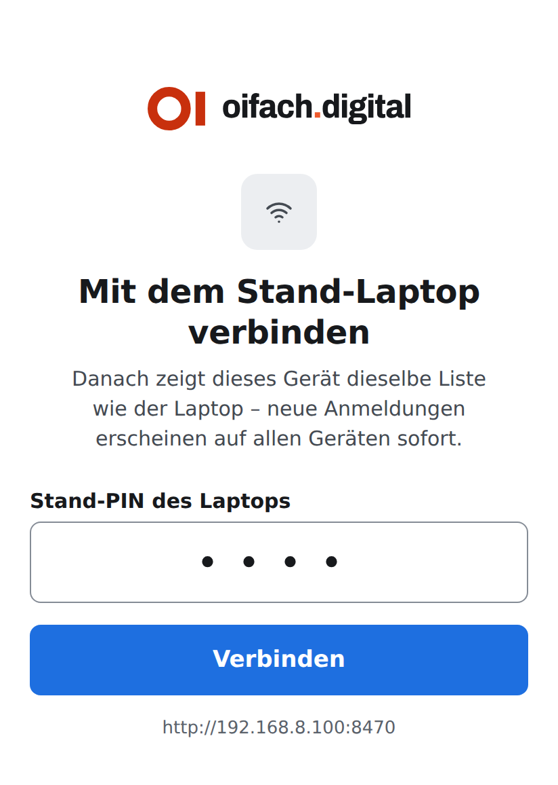
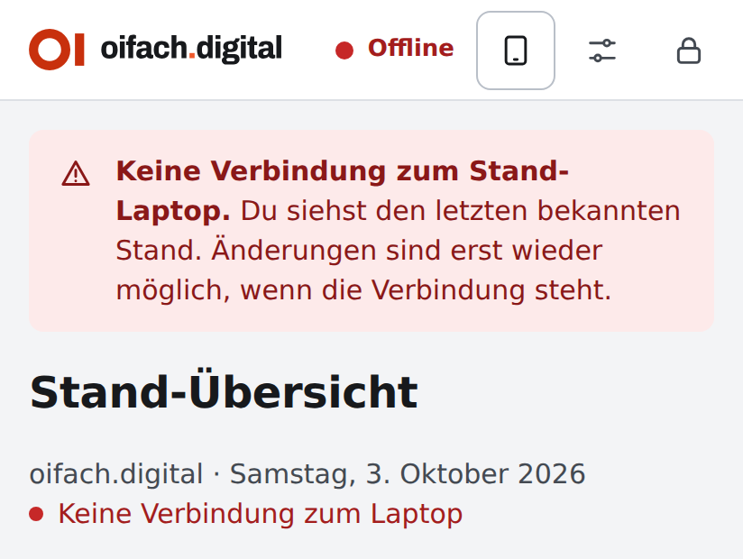
Auf einem Fernseher oder einem freien Tablet sehen Wartende, wann sie dran sind: Öffnen Sie dort die Adresse von der Start-Übersicht, verbinden Sie das Gerät mit der Stand-PIN, aktivieren Sie es mit seinem eigenen Code und wählen Sie „Aufruf-Anzeige“ (oder hängen Sie #/anzeige an die Adresse). Sobald das Team eine Nummer aufruft, erscheint sie groß unter „Jetzt dran“, die nächsten Wartenden stehen daneben. Tippen Sie einmal auf „Ton und Vollbild einschalten“, dann erklingt bei jedem Aufruf ein Gong und die Anzeige füllt den ganzen Bildschirm. Gezeigt werden nur Nummern, nie Namen oder Telefonnummern.
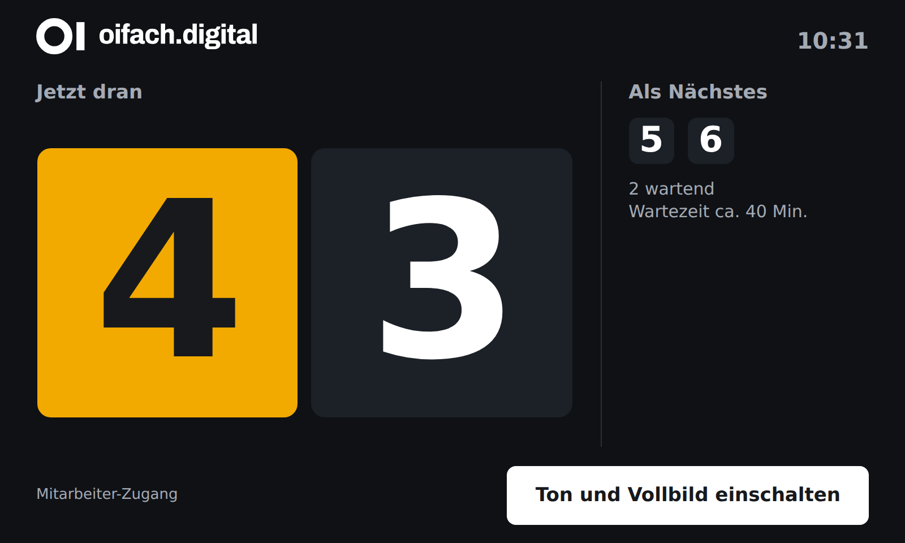
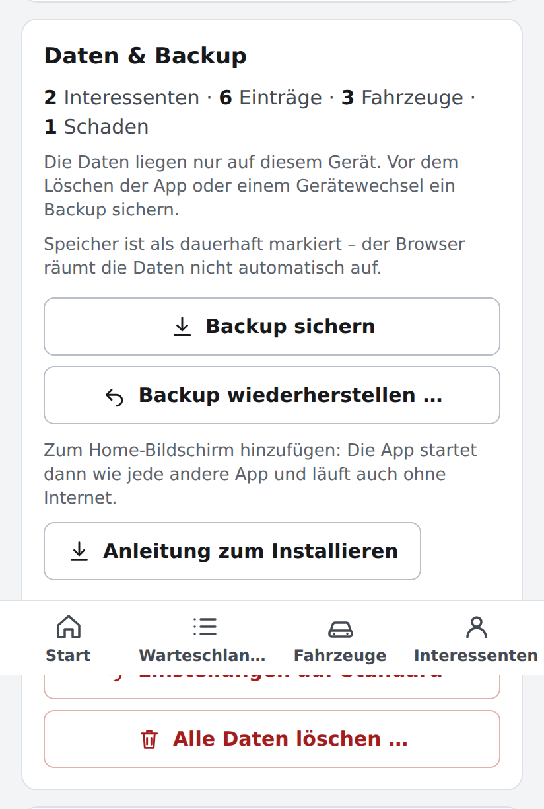